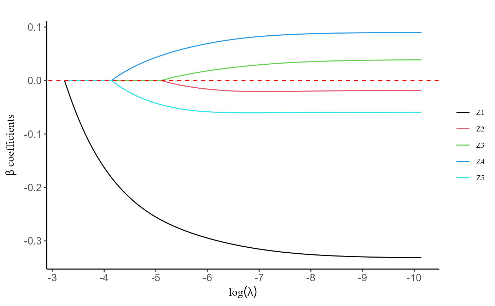

Return the plot the regularization path from a strat_cox object
Usage
# S3 method for class 'strat_cox'
plot(fit, log.x = T, label = F)
Arguments
- fit
a strat_cox object.
- log.x
whether the horizontal axis be on the log scale.
- label
whether annotates the plot with labels.
Examples
data(ContTime)
data <- ContTime$data
Event.char <- ContTime$Event.char
prov.char <- ContTime$prov.char
Z.char <- ContTime$Z.char
Time.char <- ContTime$Time.char
fit <- Strat.cox(data, Event.char, Z.char, Time.char, prov.char, group = c(1, 2, 2, 3, 3))
plot(fit, label = T)
